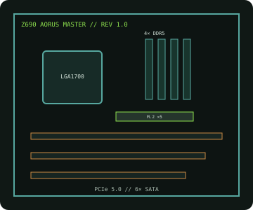

[ INDIVIDUAL COMPONENT // MOTHERBOARDS ]
GIGABYTE Z690 AORUS MASTER (rev. 1.0)
LGA1700 Z690 ATX enthusiast board with DDR5, a PCIe 5.0 graphics path, five M.2 positions and Wi-Fi 6E.

IDENTIFICATION: Exact model/revision is Z690 AORUS MASTER rev. 1.x. Confirm the silkscreen and use its revision-specific CPU/BIOS list.
Specifications
| Exact board / revision | GIGABYTE Z690 AORUS MASTER, rev. 1.0 |
|---|---|
| Socket / chipset / CPU | LGA1700, Intel Z690 Express; 12th Gen Intel Core baseline and 13th/14th Gen processors when listed for this revision with the required BIOS. |
| Form factor | E-ATX, approximately 305 × 259 mm. |
| Memory | Four dual-channel DDR5 DIMM slots; up to 256 GB. XMP/overclocked operation is CPU, BIOS and QVL dependent. |
| PCI Express | One CPU-connected PCIe 5.0 x16 slot and two chipset PCIe 3.0 x4 slots; verify the board manual for slot bandwidth and sharing. |
| Storage | Five M.2 sockets (four PCIe 4.0 x4 and one PCIe 3.0 x4/SATA) plus six SATA 6 Gb/s ports; check M.2/SATA sharing. |
| Networking / I/O | Marvell 10GbE wired LAN, Intel Wi-Fi 6E/BT and USB 3.2 connectivity including rear USB-C. Consult the board manual for connector-level details. |
| BIOS / compatibility | 13th/14th Gen CPUs may require a later BIOS. Match the rev. 1.x CPU support table, BIOS notes and DDR5 QVL before upgrade. |
Compatibility and service notes
Use LGA1700 desktop processors only if explicitly listed for revision 1.x. Later CPU generations can require a BIOS update; update using the documented method while a supported CPU is installed. Use DDR5 only and verify M.2 lane sharing and PCIe slot modes in the manual.
Document the revision and BIOS identifier and use ESD precautions. Do not apply firmware from Z690 AORUS MASTER X or another revision without manufacturer confirmation.
Manufacturer sources
- GIGABYTE — Z690 AORUS MASTER rev. 1.x specificationsOfficial specifications and board manual.
- GIGABYTE — rev. 1.0 CPU support and BIOSCheck generation-specific compatibility and minimum BIOS.